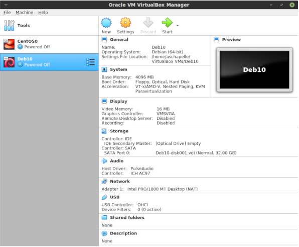
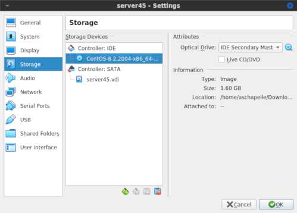
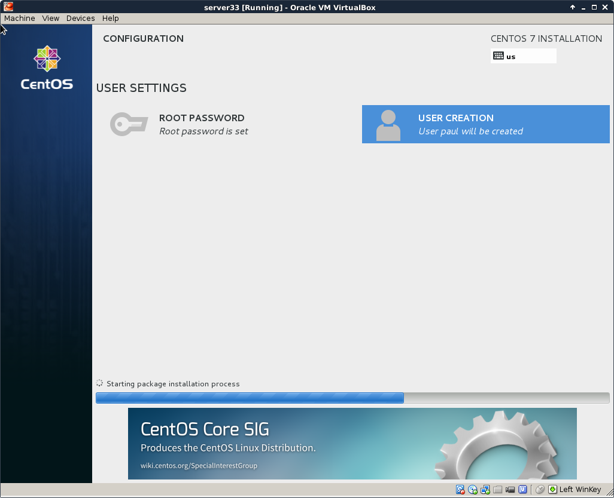
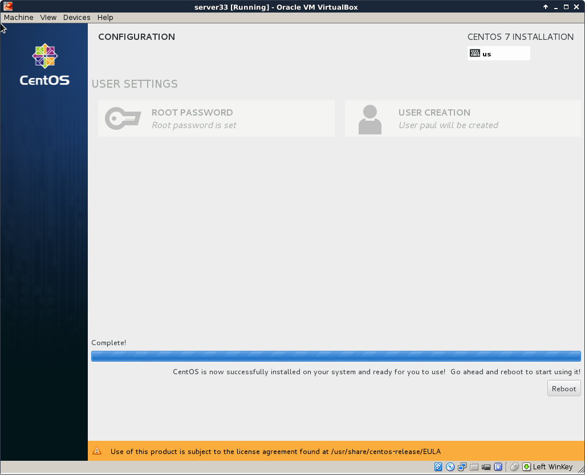
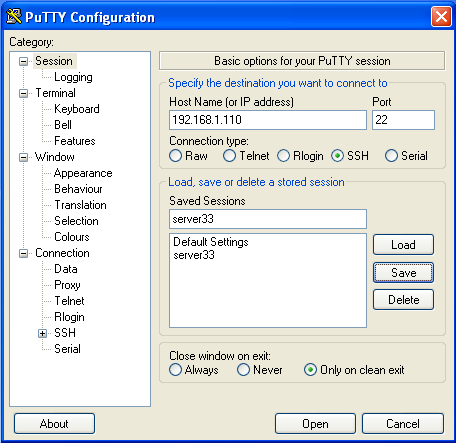

installing CentOS 8
(Written by Paul Cobbaut, https://github.com/paulcobbaut/, with contributions by: Alex M. Schapelle, https://github.com/zero-pytagoras/)
This module is a step by step demonstration of an actual installation of
CentOS 8.
We start by downloading an image from the internet and install
CentOS 8 as a virtual machine in Virtualbox. We will also do some
basic configuration of this new machine like setting an ip address and
fixing a hostname.
This procedure should be very similar for other versions of CentOS,
and also for distributions like RHEL (Red Hat Enterprise Linux) or
Fedora. This procedure can also be helpful if you are using another
virtualization solution.
download a CentOS 7 image
This demonstration uses a laptop computer with Virtualbox to install
CentOS 7 as a virtual machine. The first task is to download an .iso
image of CentOS 7.
The CentOS 7 website looks like this today (November 2014). They
change the look regularly, so it may look different when you visit it.
You can download a full DVD, which allows for an off line installation
of a graphical CentOS 7 desktop. You can select this because it should
be easy and complete, and should get you started with a working
CentOS 7 virtual machine.
But I clicked instead on \'alternative downloads\', selected CentOS 7
and x86_64 and ended up on a mirror list. Each mirror is a server
that contains copies of CentOS 7 media. I selected a Belgian mirror
because I currently am in Belgium.

There is again the option for full DVD\'s and more. This demonstration
will use the minimal .iso file, because it is much smaller in size.
The download takes a couple of minutes.

Verify the size of the file after download to make sure it is complete. Probably a right click on the file and selecting \'properties\' (if you use Windows or Mac OSX).
I use Linux on the laptop already:
paul@debian8:~$ ls -lh CentOS-7.0-1406-x86_64-Minimal.iso
-rw-r--r-- 1 paul paul 566M Nov 1 14:45 CentOS-7.0-1406-x86_64-Minimal.iso
Do not worry if you do no understand the above command. Just try to make
sure that the size of this file is the same as the size that is
mentioned on the CentOS 7 website.
Virtualbox
This screenshot shows up when I start Virtualbox. I already have four virtual machines, you might have none.

Below are the steps for creating a new virtual machine. Start by
clicking New and give your machine a name (I chose server33). Click
Next.

A Linux computer without graphical interface will run fine on
half a gigabyte of RAM.

A Linux virtual machine will need a virtual hard drive.

Any format will do for our purpose, so I left the default vdi.

The default dynamically allocated type will save disk space (until we
fill the virtual disk up to 100 percent). It makes the virtual machine a
bit slower than fixed size, but the fixed size speed improvement is
not worth it for our purpose.

The name of the virtual disk file on the host computer will be
server33.vdi in my case (I left it default and it uses the vm name).
Also 16 GB should be enough to practice Linux. The file will stay much
smaller than 16GB, unless you copy a lot of files to the virtual
machine.

You should now be back to the start screen of Virtualbox. If all went
well, then you should see the machine you just created in the list.
After finishing the setup, we go into the Settings of our virtual
machine and attach the .iso file we downloaded before. Below is the
default screenshot.

This is a screenshot with the .iso file properly attached.

CentOS 7 installing
The screenshots below will show every step from starting the virtual machine for the first time (with the .iso file attached) until the first logon.
You should see this when booting, otherwise verify the attachment of the
.iso file form the previous steps. Select
Test this media and install CentOS 7.
Carefully select the language in which you want your CentOS. I always
install operating systems in English, even though my native language is
not English.
Also select the right keyboard, mine is a US qwerty, but yours may be different.

You should arrive at a summary page (with one or more warnings).

Start by configuring the network. During this demonstration I had a DHCP server running at 192.168.1.42, yours is probably different. Ask someone (a network administator ?) for help if this step fails.
Select your time zone, and activate ntp.

Choose a mirror that is close to you. If you can\'t find a local mirror,
then you can copy the one from this screenshot (it is a general CentOS
mirror).

It can take a couple of seconds before the mirror is verified.
I did not select any software here (because I want to show it all in this training).
After configuring network, location, software and all, you should be back on this page. Make sure there are no warnings anymore (and that you made the correct choice everywhere).

You can enter a root password and create a user account while the
installation is downloading from the internet. This is the longest step,
it can take several minutes (or up to an hour if you have a slow
internet connection).

If you see this, then the installation was successful.
Time to reboot the computer and start CentOS 7 for the first time.

This screen will appear briefly when the virtual machines starts. You don\'t have to do anything.

After a couple of seconds, you should see a logon screen. This is called
a tty or a getty. Here you can type root as username. The
login process will then ask your password (nothing will appear on
screen when you type your password).
And this is what it looks like after logon. You are logged on to your own Linux machine, very good.

All subsequent screenshots will be text only, no images anymore.
For example this screenshot shows three commands being typed on my new CentOS 7 install.
[root@localhost ~]# who am i
root pts/0 2014-11-01 22:14
[root@localhost ~]# hostname
localhost.localdomain
[root@localhost ~]# date
Sat Nov 1 22:14:37 CET 2014
When using ssh the same commands will give this screenshot:
[root@localhost ~]# who am i
root pts/0 2014-11-01 21:00 (192.168.1.35)
[root@localhost ~]# hostname
localhost.localdomain
[root@localhost ~]# date
Sat Nov 1 22:10:04 CET 2014
[root@localhost ~]#
If the last part is a bit too fast, take a look at the next topic
CentOS 7 first logon.
CentOS 7 first logon
All you have to log on, after finishing the installation, is this screen in Virtualbox.
This is workable to learn Linux, and you will be able to practice a lot. But there are more ways to access your virtual machine, the next chapters discuss some of these and will also introduce some basic system configuration.
setting the hostname
Setting the hostname is a simple as changing the /etc/hostname file.
As you can see here, it is set to localhost.localdomain by default.
[root@localhost ~]# cat /etc/hostname
localhost.localdomain
You could do echo server33.netsec.local > /etc/hostname followed by a
reboot. But there is also the new CentOS 7 way of setting a new
hostname.
[root@localhost ~]# nmtui
The above command will give you a menu to choose from with a
set system hostname option. Using this nmtui option will edit the
/etc/hostname file for you.
[root@localhost ~]# cat /etc/hostname
server33.netsec.local
[root@localhost ~]# hostname
server33.netsec.local
[root@localhost ~]# dnsdomainname
netsec.local
For some reason the documentation on the centos.org and
docs.redhat.com websites tell you to also execute this command:
[root@localhost ~]# systemctl restart systemd-hostnamed
Virtualbox network interface
By default Virtualbox will connect your virtual machine over a nat
interface. This will show up as a 10.0.2.15 (or similar).
[root@server33 ~]# ip a
1: lo: <LOOPBACK,UP,LOWER_UP> mtu 65536 qdisc noqueue state UNKNOWN
link/loopback 00:00:00:00:00:00 brd 00:00:00:00:00:00
inet 127.0.0.1/8 scope host lo
valid_lft forever preferred_lft forever
inet6 ::1/128 scope host
valid_lft forever preferred_lft forever
2: enp0s3: <BROADCAST,MULTICAST,UP,LOWER_UP> mtu 1500 qdisc pfifo_fast s\
tate UP qlen 1000
link/ether 08:00:27:1c:f5:ab brd ff:ff:ff:ff:ff:ff
inet 10.0.2.15/24 brd 10.0.2.255 scope global dynamic enp0s3
valid_lft 86399sec preferred_lft 86399sec
inet6 fe80::a00:27ff:fe1c:f5ab/64 scope link
valid_lft forever preferred_lft forever
You can change this to bridge (over your wi-fi or over the ethernet
cable) and thus make it appear as if your virtual machine is directly on
your local network (receiving an ip address from your real dhcp server).
You can make this change while the vm is running, provided that you execute this command:
[root@server33 ~]# systemctl restart network
[root@server33 ~]# ip a s dev enp0s3
2: enp0s3: <BROADCAST,MULTICAST,UP,LOWER_UP> mtu 1500 qdisc pfifo_fast s\
tate UP qlen 1000
link/ether 08:00:27:1c:f5:ab brd ff:ff:ff:ff:ff:ff
inet 192.168.1.110/24 brd 192.168.1.255 scope global dynamic enp0s3
valid_lft 7199sec preferred_lft 7199sec
inet6 fe80::a00:27ff:fe1c:f5ab/64 scope link
valid_lft forever preferred_lft forever
[root@server33 ~]#
configuring the network
The new way of changing network configuration is through the nmtui
tool. If you want to manually play with the files in
/etc/sysconfig/network-scripts then you will first need to verify (and
disable) NetworkManager on that interface.
Verify whether an interface is controlled by NetworkManager using the
nmcli command (connected means managed bu NM).
[root@server33 ~]# nmcli dev status
DEVICE TYPE STATE CONNECTION
enp0s3 ethernet connected enp0s3
lo loopback unmanaged --
Disable NetworkManager on an interface (enp0s3 in this case):
echo 'NM_CONTROLLED=no' >> /etc/sysconfig/network-scripts/ifcfg-enp0s3
You can restart the network without a reboot like this:
[root@server33 ~]# systemctl restart network
Also, forget ifconfig and instead use ip a.
[root@server33 ~]# ip a s dev enp0s3 | grep inet
inet 192.168.1.110/24 brd 192.168.1.255 scope global dynamic enp0s3
inet6 fe80::a00:27ff:fe1c:f5ab/64 scope link
[root@server33 ~]#
adding one static ip address
This example shows how to add one static ip address to your computer.
[root@server33 ~]# nmtui edit enp0s3
In this interface leave the IPv4 configuration to automatic, and add an ip address just below.
IPv4 CONFIGURATION <Automatic> <Hide>
Addresses 10.104.33.32/16__________ <Remove>
Execute this command after exiting nmtui.
[root@server33 ~]# systemctl restart network
And verify with ip (not with ifconfig):
[root@server33 ~]# ip a s dev enp0s3 | grep inet
inet 192.168.1.110/24 brd 192.168.1.255 scope global dynamic enp0s3
inet 10.104.33.32/16 brd 10.104.255.255 scope global enp0s3
inet6 fe80::a00:27ff:fe1c:f5ab/64 scope link
[root@server33 ~]#
package management
Even with a network install, CentOS 7 did not install the latest
version of some packages. Luckily there is only one command to run (as
root). This can take a while.
[root@server33 ~]# yum update
Loaded plugins: fastestmirror
Loading mirror speeds from cached hostfile
* base: centos.weepeetelecom.be
* extras: centos.weepeetelecom.be
* updates: centos.weepeetelecom.be
Resolving Dependencies
--> Running transaction check
---> Package NetworkManager.x86_64 1:0.9.9.1-13.git20140326.4dba720.el7 \
will be updated
... (output truncated)
You can also use yum to install one or more packages. Do not forget to
run yum update from time to time.
[root@server33 ~]# yum update -y && yum install vim -y
Loaded plugins: fastestmirror
Loading mirror speeds from cached hostfile
* base: centos.weepeetelecom.be
... (output truncated)
Refer to the package management chapter for more information on installing and removing packages.
logon from Linux and MacOSX
You can now open a terminal on Linux or MacOSX and use ssh to log on
to your virtual machine.
paul@debian8:~$ ssh root@192.168.1.110
root@192.168.1.110's password:
Last login: Sun Nov 2 11:53:57 2014
[root@server33 ~]# hostname
server33.netsec.local
[root@server33 ~]#
logon from MS Windows
There is no ssh installed on MS Windows, but you can download
putty.exe from
http://www.chiark.greenend.org.uk/~sgtatham/putty/download.html (just
Google it).
Use putty.exe as shown in this screenshot (I saved the ip address by
giving it a name \'server33\' and presing the \'save\' button).

The first time you will get a message about keys, accept this (this is explained in the ssh chapter).
Enter your userid (or root) and the correct password (nothing will appear on the screen when typing a password).